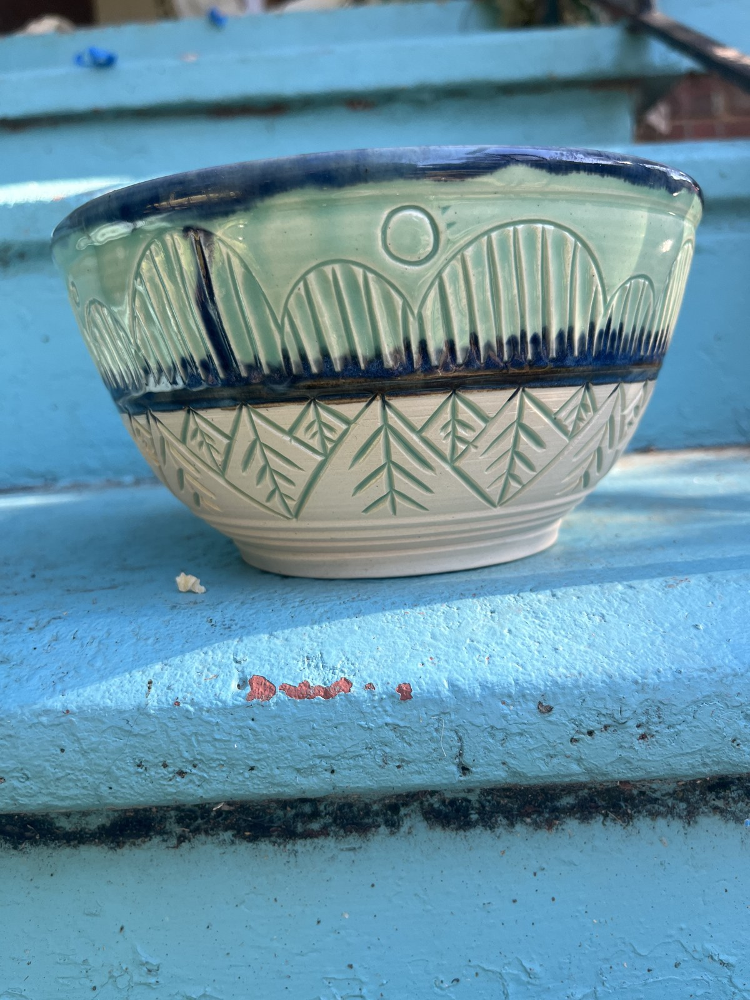

Skip to pottery
ceramics by caitlin.
The pottery
In the studio
Instagram
Bluesky
Ceramics by
Caitlin McGlade.
Explore the pottery
↓

The pottery
Click a photo for more views and dimensions.
Made by Caitlin.
See something you love?
Message Caitlin
×
Ask about this piece
×